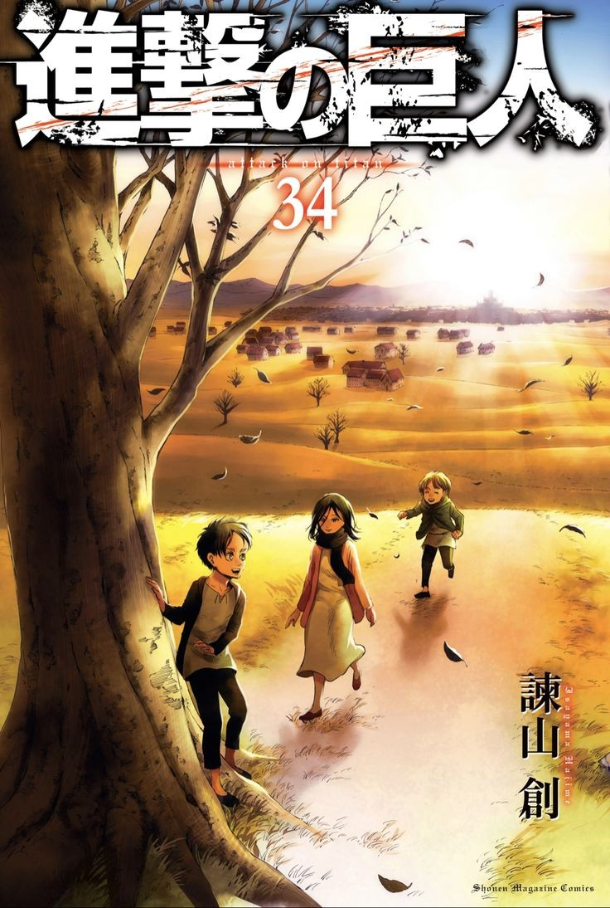

Singeki No Kyojin
Genre: Action, Drama, Fantasy, Mystery, Shounen
Selama beratus-ratus tahun manusia menjadi mangsa para Titan. Untuk berlindung dari serangan para Titan, umat manusia membangun tembok yang sangat besar dan tinggi. Namun tembok tersebut tak selamanya dapat melindungi manusia.
Suatu hari, satu Titan raksasa berhasil menghancurkan tombok dan Titan-Titan lain pun masuk ke wilayah pemukiman. Umat manusia pun tak punya pilihan lain selain bertempur untuk bertahan hidup.
Mulai Membaca